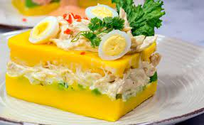

El mestizaje entre la comida peruana y la
china. Uno de los platos más típicos
peruanos propio de la cocina chifa,
el arroz chaufa. El sabor es espectacular,
realmente delicioso. ¿Te vas a quedar con las
ganas de probarlo?
Ingredientes
-Arroz
-Pechuga de pollo
-Salchicha
-Pimiento rojo
-Cebolla china
-Jengibre rallado
-Aceite de girasol
-Aceite de sésamo
-Salsa de soja
-4 huevos
Causa Limeña

La causa limeña o causa rellena es una de las recetas
más tradicionales del Perú. Un plato frío, suave y cremoso.
Al comer juntos los distintos ingredientes que la componen,
sus sabores y texturas se mezclan en cada bocado siendo un manjar
para el que lo prueba.
Ingredientes
-Papa amarilla peruana
-Pechuga de pollo
-Cebolla
-Mayonesa
-Lima
-Ají amarillo
-Aguacate
-Aceite de oliva virgen extra
-Sal (al gusto)
-Pimienta (al gusto)
Ceviche marinero
Uno de los platos más reconocidos del Perú procedente de la cultura
Mochica. Se dice que se preparaba en alta mar, cuando en medio de las
labores los pescadores troceaban el pescado y lo cocinaban en sus barcas
aprovechando el agua salda. Nuestras elaboraciones son parecidas y con un sabor igual
de exquisito.
Ingredientes
-Lechuga
-Pescado (lubina o corvina)
-Cebolla roja en julianas
-Cilantro
-Ají amarillo picado
-Limón
-Sal y pimienta
-Caldo de pescado
-Maiz cocido
-Camote
Anticucho Cuzqueño
El anticucho es una de las comidas más conocidas del Perú, se encuentra en
muchos lugares alrededor del país y su preparación es infinita, teniendo por tanto
un sabor que cambia constantemente. Gracias al marinado que le damos
en comino, orégano y vinagre queda una textura y aroma tan exquisito que querrás
repetir.